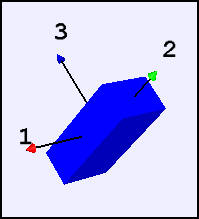
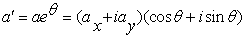
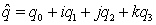
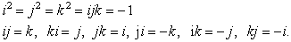
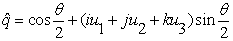

A quaternion orients a body in space.
The Quaternion Demonstration shows how to specify the orientation of a three-dimensional object using a quaternion. All possible orientations of an object can be represented using quaternions and the equations of rigid body dynamics can be formulated using quaternions. (See the OSP gyroscope model.) This simulation is designed to test the quaternion representation.
The rotation of a two-dimensional vector A=(ax, ay) through an angle θ to produce A' can be reformulated by the multiplication of two complex numbers as

where the real and imaginary parts of a and a' are the x- and y-components of the vectors A and A'. This idea can be extended to three dimensions using quaternions. A quaternion can be represented using hypercomplex number as

where the hypercomplex components i, j, and k obey Hamilton's rules

Note that hypercomplex numbers do not commute. It can be shown that a rotation through an angle θ about an axis with direction cosines (u1, u2, u3) can be represented as a unit quaternion with components

The following EJS models are described in Chapter 17 of the EJS adaptation of An Introduction to Computer Simulation Methods available in the ComPADRE digital library.
The Quaternion Demonstration was developed by Wolfgang Christian using the Easy Java Simulations (EJS) modeling tool version 4.3. You can examine and modify the model for this simulation if you have EJS installed by right-clicking within the program and selecting "Open Ejs Model" from the pop-up menu.
Information about EJS is available at: <http://www.um.es/fem/Ejs/> and in the OSP ComPADRE collection <http://www.compadre.org/OSP/>.